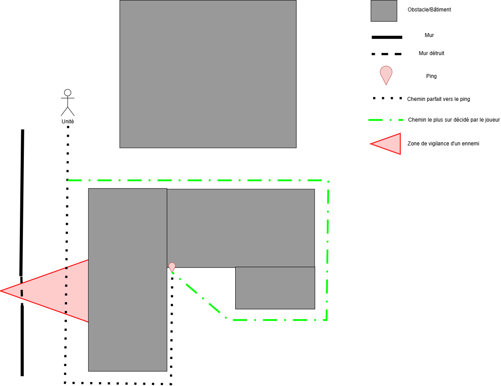
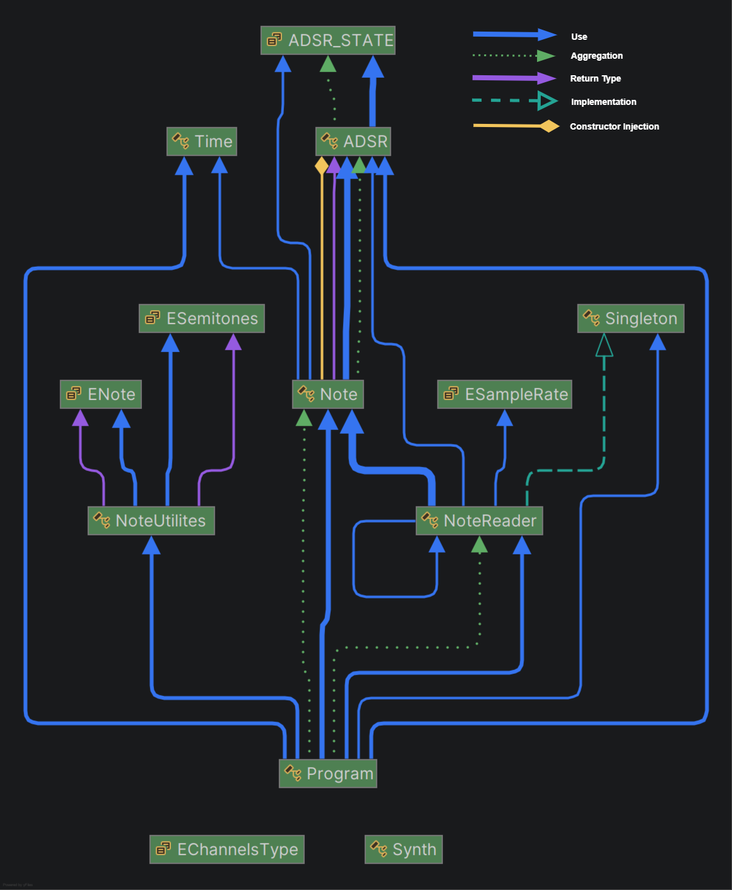
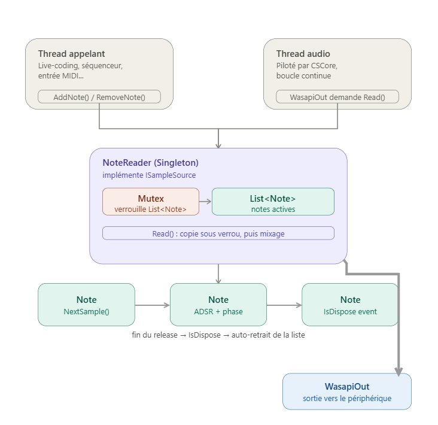

Projets
Jeu étudiant · Objectif 3D . 1er Année
Despair
Infiltration TPS — Constantinople maudie
Despair est un jeu d'infiltration à la troisième personne développé sous
Unreal Engine lors de ma première année de formation. Sur ce projet, j'étais
responsable de la programmation des 3C (Character, Camera, Controls),
de l'IA des ennemis (le Spectre et l'Œil Géant), ainsi que de l'intégration
et de la programmation des systèmes d'animation du personnage joueur et des ennemis.
Ce projet a été réalisé dans un cadre pédagogique imposant plusieurs contraintes techniques.
Nous devions développer les différentes mécaniques uniquement avec les outils et concepts abordés
en cours. L'utilisation de fonctionnalités avancées ou de composants simplifiant le développement,
tels que les Box Cast, Sphere Cast ou certains composants prédéfinis
d'Unreal Engine, était volontairement interdite. Cette approche nous a amenés à concevoir nos
propres solutions, à mieux comprendre le fonctionnement des systèmes sous-jacents et à développer
une solide méthodologie de résolution de problèmes.
Nous avons également travaillé avec Perforce (P4V) tout au long de la production,
en nous familiarisant avec les bonnes pratiques de gestion de versions, de
synchronisation des fichiers et de travail collaboratif sur un projet Unreal Engine.
Cette expérience nous a permis de nous rapprocher des conditions de production utilisées dans
un environnement professionnel.
Animation Developer · Serious Game . 2eme Année
Serious Game
La Poste
IK et simulation d'ivresse
De janvier à mars 2026, j’ai contribué au développement d’un
serious game destiné à la formation et à la sensibilisation des employés,
conçu pour soutenir les procédures de sécurité et les bonnes pratiques internes.
Développé sous Unity et C#, le projet a été réalisé dans le respect
des contraintes de production.
Je me suis concentré sur la programmation des animations et l’intégration
du gameplay, notamment les systèmes IK pour les mains et les doigts du
personnage, les fonctionnalités de gameplay basées sur l’animation, ainsi qu’un système de
distorsion des mouvements simulant des états de locomotion altérée,
comme les effets de l’intoxication, afin d’améliorer les scénarios de formation et la prise
de conscience des utilisateurs.
J’ai travaillé au sein d’un pipeline de production en équipe, en contribuant
au débogage, à l’intégration des fonctionnalités et à la mise au point du gameplay dans le
respect de délais stricts.
Forts de l’expérience acquise lors de nos précédents projets, nous avons également pu mettre
en pratique et transmettre nos bonnes pratiques de gestion de versions avec
Perforce (P4V). En tant qu’étudiants en deuxième année de programmation, nous avons
notamment accompagné les étudiants de première année dans leur prise en main de
Perforce, en les formant aux bonnes pratiques de synchronisation, de gestion
des fichiers et de travail collaboratif sur un projet Unity.
Projet personnel · Unity / C#
Procedural Finger IK (Inverse Kinematics)
Système IK procédural personnalisé pour l'interaction avec les doigts et la préhension d'objets.
Les solutions d’IK natives d’Unity permettant de repositionner les membres d’un personnage
restent limitées lorsqu’il s’agit de contrôler précisément les phalanges des doigts.
J’ai donc développé, en parallèle de mes projets, un
système d’IK procédurale sur mesure en C#, basé sur le module
Animation Rigging d’Unity et son interface IRigConstraint.
Le principe consiste à remplacer, au moment opportun, l’animation keyframée par un calcul
procédural en temps réel. Pour détecter le contact avec un objet, chaque doigt dispose d’un
point d’origine depuis lequel sont émis plusieurs
raycasts répartis selon un éventail d’angles paramétrables.
Lorsqu’un rayon détecte un objet appartenant au layer ciblé, le point de collision est récupéré
et assigné dynamiquement comme cible IK à la phalange correspondante. Le pouce bénéficie d’un
traitement spécifique en raison de son axe de rotation particulier, combinant ses trois axes
locaux afin d’orienter correctement l’éventail de détection.
La flexion des phalanges est ensuite contrôlée par un composant générique
IKFinger, qui évalue en LateUpdate une liste de contraintes
configurables. Chaque contrainte peut fonctionner selon deux modes,
distance ou angle, puis transmettre la valeur obtenue à une
AnimationCurve. Celle-ci permet de produire soit une rotation locale sur l’os,
soit un poids appliqué à la RigConstraint associée.
L’utilisation d’AnimationCurve permet ainsi de contrôler précisément le comportement
de chaque doigt et le ressenti de la saisie, directement depuis l’Inspector
sans modifier le code. Le système est également intégré à la
State Machine de l’Animator via des StateMachineBehaviour.
Lors de l’entrée dans un état de saisie, le système vérifie auprès de l’IKManager
si une collision est détectée. Si c’est le cas, le layer d’animation classique est
progressivement remplacé par le système IK, avec l’activation du RigBuilder
après un léger délai afin d’éviter une transition visuellement brutale. Dans le cas contraire,
l’animation keyframée conserve le contrôle.
À la sortie de l’état, le RigBuilder est désactivé, les layers sont resynchronisés
via SyncLayers() et les poids sont réinitialisés à leurs valeurs par défaut.
Conçu comme un outil personnel modulaire et réutilisable, ce système m’a ensuite
servi de base technique pour implémenter l’IK des mains et des doigts dans le serious
game développé pour La Poste.

.png)
.png)
.png)
Projet personnel · UE5 / C++
Adhafera
Préproduction — Stratégie tour par tour
Adafera est un projet de préproduction réalisé sur une période de
2 mois, avant une production prévue sur 8 mois. Le concept
initial reposait sur un tactical combinant une vue satellite pour la
planification et une vue FPS pour le contrôle direct des personnages
pendant les phases d'action.
Durant cette phase, je me suis principalement chargé de la programmation des
3C, avec un focus particulier sur les systèmes de caméra et de contrôle.
J'ai développé les déplacements de la vue satellite et de la vue FPS, ainsi que les transitions
entre ces deux perspectives. La caméra satellite utilisait une projection
orthographique simulée, tandis que la vue FPS reposait sur une caméra en
perspective avec un FOV adapté.
J'ai également développé le système permettant de transférer le contrôle entre les
différents personnages jouables et la vue satellite. Cette architecture permettait
de passer d'un contexte de contrôle à l'autre tout en conservant une transition cohérente
entre les différentes perspectives. Un système de couverture a également
été prototypé afin de gérer le positionnement, l'orientation et les déplacements du personnage
le long des surfaces de couverture.
Évolution du concept
Au cours de la préproduction, les premiers tests ont cependant mis en évidence plusieurs
problèmes liés au game feel de la vue FPS. La combinaison entre la planification
tactique et les phases de déplacement en vue FPS nécessitait notamment de trouver des solutions
permettant de rendre cette perspective plus lisible et engageante.
Plutôt que d'abandonner immédiatement cette approche, j'ai défendu l'idée de conserver la vue
FPS et ai préparé une présentation accompagnée d'un diaporama d'analyse
présentant différentes pistes pour résoudre les problèmes de lisibilité et de sensation de jeu
identifiés lors des tests. J'y ai étudié différentes solutions de caméra, de contrôle et de
game design, en comparant leurs avantages, leurs contraintes et leur impact sur la production.
J'ai ensuite présenté et défendu ces propositions devant les différents
décisionnaires du projet, afin de confronter ces solutions aux contraintes de
production et aux objectifs de game design. Cette présentation avait pour objectif de fournir
une base concrète permettant de déterminer s'il était pertinent de conserver la vue FPS ou de
faire évoluer la direction du projet.
Après analyse des différentes solutions, nous avons cependant conclu que leur mise en œuvre
nécessiterait davantage de temps et de ressources disponibles que ce que le
projet pouvait consacrer à cette fonctionnalité. Avec seulement 8 mois de production
prévus après les 2 mois de préproduction, le risque de consacrer une part trop
importante de la production à la résolution de ces problèmes a été jugé trop élevé.
Pivot vers une vue isométrique
Le projet a finalement évolué vers une approche entièrement
isométrique, davantage adaptée aux besoins du tactical et aux contraintes
de production. Le système de changement de contrôleur a également été repensé : au lieu de
basculer entre la vue satellite et les personnages jouables, le contrôle est désormais
transféré au personnage uniquement pendant les phases de visée.
Cette évolution m'a permis de travailler sur une problématique importante de préproduction :
trouver un équilibre entre intention de game design, faisabilité technique et
contraintes de production. Même si la solution initiale n'a finalement pas été
retenue, le prototypage et l'analyse réalisés ont permis d'identifier ses limites et de
contribuer à une décision de production mieux adaptée aux ressources disponibles et au
planning du projet.
Projet personnel · C# / CSCore
Moteur audio natif avec CSCore
moteur audio léger permettant de générer et de manipuler du son directement en code
Ce projet m'a permis d'explorer les fondamentaux du
traitement audio temps réel,
en partant de la génération d'une onde jusqu'à sa diffusion : synthèse par
oscillateur sinusoïdal, contrôle de la fréquence d'échantillonnage et mise en
place d'une enveloppe ADSR (Attack, Decay, Sustain, Release) pour donner à
chaque note une évolution de volume naturelle plutôt qu'un simple signal on/off.
Sur le plan technique, la sortie audio repose sur
CSCore : chaque note calcule
elle-même son échantillon via
NextSample(), sans connaître ni gérer le périphérique
de sortie. Un gestionnaire central,
NoteReader, implémente l'interface
ISampleSource de
CSCore, qui expose un flux d'échantillons que la bibliothèque peut
lire en continu.
À chaque appel de
Read(),
NoteReader parcourt toutes les notes actives,
additionne leurs échantillons pour produire le
mixage audio, puis écrit le résultat dans le buffer demandé.
Ce flux est ensuite branché à un
WasapiOut, la classe de
CSCore responsable de piloter le périphérique de sortie
audio via WASAPI.
NoteReader est exposé en
Singleton, via une classe générique
Singleton<T>
que j'ai écrite, basée sur
Lazy<T>.
Cette architecture garantit un point d'entrée unique pour ajouter ou retirer des notes
depuis n'importe quel endroit du code, sans avoir à faire circuler une référence explicite.
Cela est particulièrement utile pour un moteur pensé pour être piloté dynamiquement,
que ce soit par un synthétiseur virtuel, un système de
live-coding façon algorave, ou tout autre logique de génération.
Multithreading et temps réel
Cette architecture m'a également confronté aux contraintes du
multithreading audio temps réel.
Le Read() de
NoteReader est appelé par le
thread audio interne de
CSCore, qui redemande des échantillons en continu
et à intervalles très courts pour ne jamais laisser le buffer se vider.
En parallèle, la logique qui pilote le moteur — déclenchement de notes en
live-coding, séquenceur, entrée MIDI, etc. — ajoute ou retire des notes depuis
un autre thread. Ces deux threads accèdent donc à la même
List<Note> en même temps,
ce qui expose à des accès concurrents pouvant provoquer des exceptions de collection modifiée
pendant itération, ou des artefacts audio (clics, coupures) si une note est
insérée ou retirée au mauvais moment.
Pour sécuriser cet accès, j'ai protégé toute modification et lecture de la liste par un
Mutex. Le
Read() commence systématiquement par copier la liste dans une
variable locale sous verrou avant de relâcher le verrou et d'itérer sur cette copie pour le
mixage. Cela évite de bloquer le thread appelant pendant toute la durée du traitement audio,
tout en garantissant que le thread audio travaille sur un état cohérent.
Le thread audio travaille ainsi sur un
snapshot cohérent des notes actives
sans conserver le verrou pendant toute la durée du traitement audio. Cette approche limite
les risques de contention tout en garantissant la cohérence des données utilisées par le
thread audio.
Gestion du cycle de vie des notes
Chaque Note expose également un événement
IsDispose, déclenché automatiquement une fois son enveloppe
ADSR arrivée en fin de phase de
Release.
NoteReader s'abonne à cet événement dès l'ajout de la note
afin de la retirer lui-même de la liste dès qu'elle se termine. Cette approche évite ainsi
toute accumulation de notes mortes en mémoire au fil d'une session prolongée, sans nécessiter
de nettoyage manuel.
Bilan
Au final, ce projet m'a autant appris sur la
synthèse sonore elle-même que sur la rigueur qu'impose le
temps réel : dans un contexte audio, la moindre attente ou le moindre accès
mal synchronisé se traduit immédiatement par un défaut audible, ce qui pousse à une discipline
de code différente de ce qu'on peut se permettre ailleurs.
L'objectif était avant tout de comprendre un système audio
au niveau du signal plutôt que de simplement m'appuyer sur les fonctionnalités
toutes faites d'un moteur audio existant.

